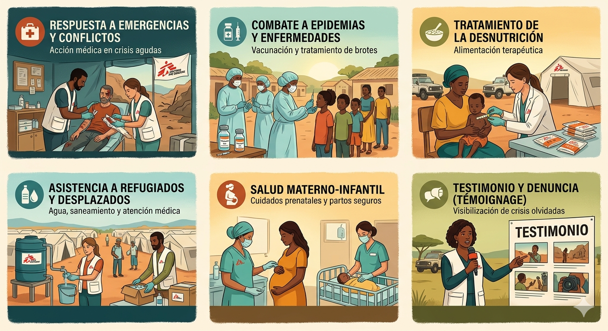

Medicos sin fronteras AR
-
Presentación de la ONG
Médicos Sin Fronteras (MSF) es una organización médico-humanitaria de carácter internacional que aporta su ayuda a poblaciones en situación precaria y a víctimas de catástrofes de origen natural o humano y de conflictos armados, sin ninguna discriminación por raza, religión o ideología política. Fundada en 1971, cuenta con miles de profesionales de la salud, especialistas en logística y personal administrativo que trabajan en más de 70 países. Su labor fue reconocida con el Premio Nobel de la Paz en 1999.
-
Misión de la ONG
La misión de MSF se sustenta en dos pilares fundamentales:
- Acción Médica: Salvar vidas y aliviar el sufrimiento mediante la atención médica directa en crisis agudas.
- Testimonio (Témoignage): Como organización independiente, MSF se reserva el derecho de denunciar públicamente las violaciones de derechos humanos y las injusticias que presencia en el terreno, buscando atraer la atención sobre crisis olvidadas.
-
Resumen de las áreas de trabajo
MSF trabaja en una amplia gama de áreas para abordar las necesidades de las poblaciones vulnerables. Algunas de las áreas clave incluyen:
